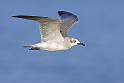
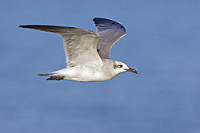

| Laughing Gull | |
|---|---|
|  | |
| Laughing Gull in flight | |
| Conservation status | |
| Binomial name | |
| Larus atricilla Linnaeus, 1758 |
|
| Synonyms | |
|
Larus atricilla |
| Laughing Gull | |
|---|---|
|  | |
| Laughing Gull in flight | |
| Conservation status | |
| Binomial name | |
| Larus atricilla Linnaeus, 1758 |
|
| Synonyms | |
|
Larus atricilla |
The Laughing Gull, Larus atricilla, is a medium-sized gull of North and South America. It breeds on the Atlantic coast of North America, the Caribbean, and northern South America. Northernmost populations migrate further south in winter, and this species occurs as a rare vagrant to western Europe. (There was an influx into North-west Europe in late October 2005 when at least 18, possibly as many as 35, individuals occurred on one day in the UK alone.) The Laughing Gull's English name is derived from its raucous kee-agh call, which sounds like a high-pitched laugh "ha... ha... ha...".
This species is easy to identify. It is 36–41 cm (14–16 in) long with a 98–110 cm (39–43 in) wingspan. The summer adult's body is white apart from the dark grey back and wings and black head. Its wings are much darker grey than all other gulls of similar size except the smaller Franklin's Gull, and they have black tips without the white crescent shown by Franklin's. The beak is long and red. The black hood is mostly lost in winter.
Laughing Gulls take three years to reach adult plumage. Immature birds are always darker than most similar-sized gulls other than Franklin's. First-year birds are greyer below and have paler heads than first-year Franklin's, and second-years can be distinguished by the wing pattern and structure.
Laughing Gulls breed in coastal marshes and ponds in large colonies. The large nest, made largely from grasses, is constructed on the ground. The 3 or 4 greenish eggs are incubated for about three weeks. These are omnivores like most gulls, and they will scavenge as well as seeking suitable small prey.
Like most other members of the genus Larus, the Laughing Gull was long placed in the genus Larus. The present placement in Larus follows the American Ornithologists' Union.[2][3]

{kind=link}
{kind=link}